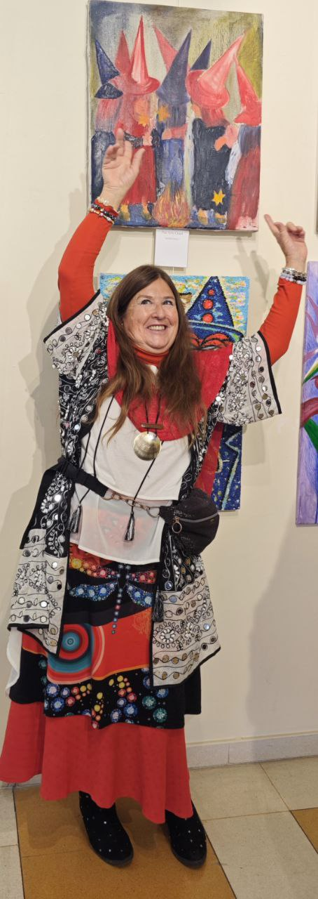
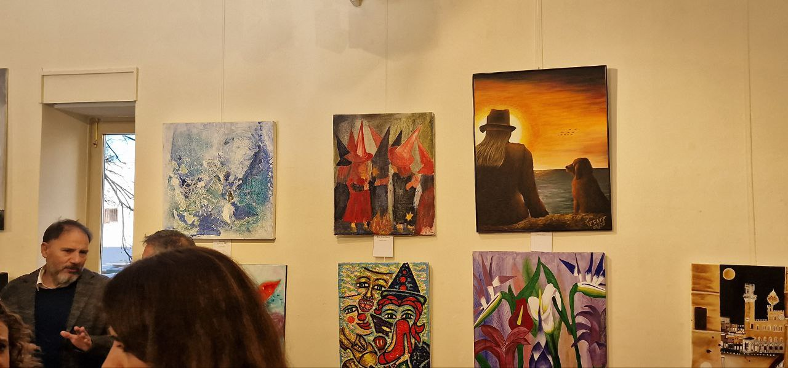

Ficha Técnica Technical Sheet Scheda Tecnica Технический лист 技术表 ورقة فنية Technisches Datenblatt Fiche technique テクニカルシート Ficha Técnica
- Técnica: Óleo. Technique: Oil. Tecnica: Olio. Техника: Масло. 技术：油画。 التقنية: زيت. Technik: Öl. Technique : Huile. テクニック: 油彩。 Técnica: Óleo.
- Tamaño: 50x50 cm Size: 50x50 cm Dimensione: 50x50 cm Размер: 50x50 см 尺寸：50x50 厘米 الحجم: 50x50 سم Größe: 50x50 cm Taille : 50x50 cm サイズ: 50x50 cm Tamanho: 50x50 cm
- Lugar de Creación: Facultad de Bellas Artes en Madrid Creation Place: Fine Arts School of Madrid Luogo di Creazione: Accademia di Belle Arti di Madrid Место создания: Факультет изящных искусств в Мадриде 创作地点：马德里美术学院 مكان الإنشاء: كلية الفنون الجميلة في مدريد Entstehungsort: Fakultät für Schöne Künste in Madrid Lieu de création : Faculté des Beaux-Arts de Madrid 創作場所：マドリード美術学部 Lugar de Criação: Faculdade de Belas Artes de Madrid
- Ubicación Actual: Colección Privada en Madrid. Current Location: Private Collection in Madrid. Ubicazione Attuale: Collezione privata a Madrid. Текущее положение: Частная коллекция, Мадрид. 当前位置：马德里私人收藏。 الموقع الحالي: مجموعة خاصة في مدريد. Aktueller Standort: Privatsammlung in Madrid. Emplacement actuel : Collection Privée à Madrid. 現在の場所：マドリードのプライベートコレクション。 Localização Atual: Coleção Privada em Madrid.
Análisis Crítico Critical Analysis Analisi critica Критический анализ 批判性分析 التحليل النقدي Kritische Analyse Analyse critique 批判的分析 Análise Crítica
"Los Pequeños Magos", una obra maestra de Paz Arés Osset, captura la esencia mística de la infancia, donde la línea entre juego y realidad se desvanece en el aire cargado de la magia de un carnaval eterno. Inspirada por los juegos de disfraces y la ilimitada imaginación de sus alumnos en el colegio Virgen del Retamar donde Paz fue maestra por muchos años, Arés Osset infunde vida en cada pincelada, creando un mundo donde la fantasía infantil se torna palpable, un lugar donde los sombreros de brujo no son simples telas, sino poderosos conductos de la magia más pura.
Las figuras enigmáticas, envueltas en el manto de la noche, se reúnen alrededor de un fuego que arde con la fuerza de las estrellas mismas, materializando deseos en cada chispa que se escapa al cielo. La obra habla de un universo paralelo regido por las reglas del corazón y la imaginación, donde los niños, como pequeños alquimistas, tienen el poder de transformar el mundo con sus juegos y sus sueños.
Arés Osset nos recuerda con "Los Pequeños Magos" que la magia, esa fuerza que parece tan lejana en nuestro día a día adulto, es una realidad tangible en el mundo de los niños. En sus manos, varitas y sombreros se convierten en herramientas de transformación, y lo que desean con la inocencia de sus corazones se manifiesta ante sus ojos asombrados. La artista plasma una cautivadora advertencia: los juegos y los deseos no son meros pasatiempos, sino actos de creación poderosos que deben ser abordados con la misma reverencia con la que un mago pronuncia sus encantamientos.
"Los Pequeños Magos" no solo es una representación visualmente impresionante de la alquimia y la fantasía, sino un recordatorio conmovedor de que debemos abrazar y cuidar la imaginación de los niños, pues en ella yace el poder de moldear el futuro. En esta obra, Paz Arés Osset no solo nos enseña que la magia es real, sino que también nos impulsa a preguntarnos qué clase de realidad estamos deseando a través de los juegos que jugamos y las fantasías que alimentamos.
A través de la mirada de Paz Arés Osset, se nos insta a jugar de nuevo, a soñar con la despreocupación de la juventud, pero con la sabiduría de la experiencia. Porque al hacerlo, no solo recuperamos nuestro poder alquímico creativo, sino que también nos hacemos responsables de la realidad que nuestro juego puede, y de hecho, creará. En la audaz paleta y los trazos valientes de "Los Pequeños Magos" Arés Osset no sólo captura una imagen; ella captura una verdad: que el juego es la primera lengua del cambio, y que nuestros juegos y deseos más sinceros tienen el poder de tejer el tejido mismo del cosmos.
La obra presenta un fascinante conglomerado de figuras que evocan la atemporalidad de la narrativa mágica y el misterio. Estos personajes, ataviados con sombreros cónicos que recuerdan a los clásicos hechiceros de los cuentos, están sumidos en un espacio donde el color y la forma se funden en un diálogo visual dinámico.
El espectador podría observar que la paleta de colores escogida es audaz, con rojos vibrantes y negros profundos que sugieren una danza entre la pasión y lo oculto. La aplicación de la pintura, con su textura palpable y su ejecución casi impulsiva, habla de un fervor creativo que rehúsa ser contenido. La presencia de un elemento fuego, junto con estrellas dispersas de las varitas mágicas, aporta una dimensión de ritual y cosmología.
La obra transmite una sensación de movimiento y energía latente. Hay un sentido de comunidad y secretismo entre las figuras, como si estuvieran conspirando o participando en un antiguo ritual. El espectador podría sentir que esta pieza es una ventana a un mundo donde lo arcaico y lo místico se entrelazan, un mundo que invita a ser explorado no sólo con la vista, sino con el alma.
En última instancia, el espectador podría concluir que la artista ha capturado con éxito la esencia de un encuentro mágico, uno que despierta en el espectador la curiosidad por las historias no contadas y los secretos apenas velados. La obra es un testamento a la habilidad de provocar emoción y reflexión, desafiando al espectador a sumergirse en los sentimientos que tales imágenes evocan.
"The Little Wizards", a masterpiece by Paz Arés Osset, captures the mystical essence of childhood, where the line between play and reality fades in the air charged with the magic of an eternal carnival. Inspired by the costume games and the unlimited imagination of her students at the Virgen del Retamar school where Paz was a teacher for many years, Arés Osset infuses life into each brushstroke, creating a world where childhood fantasy becomes palpable, a place where witch hats are not simple fabrics, but powerful conduits of the purest magic.
The enigmatic figures, wrapped in the cloak of night, gather around a fire that burns with the force of the stars themselves, materializing desires in each spark that escapes into the sky. The work speaks of a parallel universe governed by the rules of the heart and imagination, where children, like little alchemists, have the power to transform the world with their games and dreams.
Arés Osset reminds us with "The Little Wizards" that magic, that force that seems so far away in our daily adult lives, is a tangible reality in the world of children. In their hands, wands and hats become tools of transformation, and what they desire with the innocence of their hearts manifests before their amazed eyes. The artist expresses a captivating warning: games and desires are not mere pastimes, but powerful acts of creation that must be approached with the same reverence with which a magician pronounces his incantations.
"The Little Wizards" is not only a visually stunning representation of alchemy and fantasy, but a poignant reminder that we must embrace and nurture children's imaginations, for within it lies the power to shape the future. In this work, Paz Arés Osset not only teaches us that magic is real, but also prompts us to ask ourselves what kind of reality we are desiring through the games we play and the fantasies we feed.
Through the eyes of Paz Arés Osset, we are urged to play again, to dream with the carelessness of youth, but with the wisdom of experience. Because in doing so, we not only take back our creative alchemical power, but we also take responsibility for the reality that our game can, and will, create. In the bold palette and brave strokes of "The Little Wizards" Arés Osset not only captures an image; she captures a truth: that play is the first language of change, and that our games and most sincere desires have the power to weave the very fabric of the cosmos.
The work presents a fascinating conglomerate of figures that evoke the timelessness of magical narrative and mystery. These characters, dressed in conical hats reminiscent of classic fairy tale sorcerers, are immersed in a space where color and shape merge in a dynamic visual dialogue.
The viewer could observe that the color palette chosen is bold, with vibrant reds and deep blacks that suggest a dance between passion and the occult. The application of paint, with its palpable texture and almost impulsive execution, speaks of a creative fervor that refuses to be contained. The presence of a fire element, along with scattered stars from magic wands, provides a dimension of ritual and cosmology.
The work transmits a sensation of movement and latent energy. There is a sense of community and secrecy between the figures, as if they are plotting or participating in an ancient ritual. The viewer could feel that this piece is a window to a world where the archaic and the mystical intertwine, a world that invites to be explored not only with the eye, but with the soul.
Ultimately, the viewer might conclude that the artist has successfully captured the essence of a magical encounter, one that sparks the viewer's curiosity about untold stories and thinly veiled secrets. The work is a testament to the ability to provoke emotion and reflection, challenging the viewer to immerse themselves in the feelings that such images evoke.
"I Piccoli Maghi", capolavoro di Paz Arés Osset, cattura l'essenza mistica dell'infanzia, dove il confine tra gioco e realtà si sfuma nell'aria carica della magia di un eterno carnevale. Ispirandosi ai giochi in costume e all'immaginazione illimitata dei suoi studenti della scuola Virgen del Retamar dove Paz è stata insegnante per molti anni, Arés Osset infonde vita in ogni pennellata, creando un mondo in cui la fantasia infantile diventa palpabile, un luogo dove i cappelli da strega non sono semplici tessuti, ma potenti condotti della magia più pura.
Le enigmatiche figure, avvolte nel manto della notte, si radunano attorno ad un fuoco che arde con la forza delle stelle stesse, materializzando i desideri in ogni scintilla che sfugge nel cielo. L'opera parla di un universo parallelo governato dalle regole del cuore e della fantasia, dove i bambini, come piccoli alchimisti, hanno il potere di trasformare il mondo con i loro giochi e i loro sogni.
Arés Osset ci ricorda con "I Piccoli Maghi" che la magia, quella forza che sembra così lontana nella nostra quotidianità adulta, è una realtà tangibile nel mondo dei bambini. Nelle loro mani, bacchette e cappelli diventano strumenti di trasformazione, e ciò che desiderano con l'innocenza del loro cuore si manifesta davanti ai loro occhi stupiti. L'artista esprime un accattivante avvertimento: giochi e desideri non sono semplici passatempi, ma potenti atti di creazione a cui bisogna avvicinarsi con la stessa riverenza con cui un mago pronuncia i suoi incantesimi.
"I Piccoli Maghi" non è solo una rappresentazione visivamente sbalorditiva dell'alchimia e della fantasia, ma ci ricorda in modo toccante che dobbiamo abbracciare e coltivare l'immaginazione dei bambini, perché in essa risiede il potere di plasmare il futuro. In questo lavoro, Paz Arés Osset non solo ci insegna che la magia è reale, ma ci spinge anche a chiederci che tipo di realtà desideriamo attraverso i giochi che facciamo e le fantasie che alimentiamo.
Attraverso gli occhi di Paz Arés Osset siamo spinti a giocare ancora, a sognare con la spensieratezza della giovinezza, ma con la saggezza dell'esperienza. Perché così facendo, non solo riprendiamo il nostro potere alchemico creativo, ma ci assumiamo anche la responsabilità della realtà che il nostro gioco può e creerà. Nella tavolozza audace e nei tratti coraggiosi di "I Piccoli Maghi" Arés Osset non solo cattura un'immagine; coglie una verità: che il gioco è il primo linguaggio del cambiamento, e che i nostri giochi e i desideri più sinceri hanno il potere di tessere il tessuto stesso del cosmo.
L'opera presenta un affascinante conglomerato di figure che evocano l'atemporalità della narrativa magica e del mistero. Questi personaggi, vestiti con cappelli conici che ricordano gli stregoni delle fiabe classiche, sono immersi in uno spazio dove colore e forma si fondono in un dinamico dialogo visivo.
Lo spettatore può osservare che la tavolozza dei colori scelta è audace, con rossi vibranti e neri profondi che suggeriscono una danza tra passione e occulto. L'applicazione della vernice, con la sua consistenza palpabile e l'esecuzione quasi impulsiva, parla di un fervore creativo che rifiuta di essere contenuto. La presenza di un elemento fuoco, insieme alle stelle sparse dalle bacchette magiche, fornisce una dimensione rituale e cosmologica.
L'opera trasmette una sensazione di movimento ed energia latente. C'è un senso di comunità e segretezza tra le figure, come se stessero complottando o partecipando a un antico rituale. Lo spettatore può sentire che quest'opera è una finestra su un mondo in cui l'arcaico e il mistico si intrecciano, un mondo che invita a essere esplorato non solo con gli occhi, ma con l'anima.
Alla fine, lo spettatore potrebbe concludere che l'artista è riuscito a catturare l'essenza di un incontro magico, che suscita la curiosità dello spettatore verso storie non raccontate e segreti sottilmente velati. L'opera testimonia la capacità di provocare emozioni e riflessioni, sfidando lo spettatore a immergersi nei sentimenti che tali immagini evocano.
«Маленькие волшебники», шедевр Паса Ареса Оссета, отражает мистическую суть детства, где грань между игрой и реальностью стирается в воздухе, наполненном волшебством вечного карнавала. Вдохновленная костюмированными играми и безграничным воображением своих учеников в школе Вирхен дель Ретамар, где Пас преподавала много лет, Арес Оссет наполняет жизнью каждый мазок кисти, создавая мир, в котором детские фантазии становятся ощутимыми, место, где шляпы ведьм — это не просто ткань, а мощные проводники чистейшей магии.
Загадочные фигуры, укутанные покровом ночи, собираются вокруг костра, горящего с силой самих звезд, материализуя желания в каждой искре, улетающей в небо. В произведении говорится о параллельной вселенной, управляемой правилами сердца и воображения, где дети, подобно маленьким алхимикам, обладают силой преобразовывать мир своими играми и мечтами.
Арес Оссет напоминает нам в «Маленьких волшебниках», что магия, эта сила, которая кажется такой далекой в нашей повседневной взрослой жизни, является осязаемой реальностью в мире детей. В их руках палочки и шляпы становятся инструментами трансформации, и то, чего они желают с невинностью своего сердца, проявляется перед их изумленными глазами. Художник выражает пленительное предостережение: игры и желания – это не просто времяпрепровождение, а мощные акты творчества, к которым нужно относиться с таким же почтением, с каким маг произносит свои заклинания.
«Маленькие волшебники» — это не только потрясающее визуальное представление алхимии и фэнтези, но и острое напоминание о том, что мы должны поддерживать и развивать детское воображение, поскольку в нем заключена сила формирования будущего. В этой работе Пас Арес Оссет не только учит нас, что магия реальна, но и побуждает нас задаться вопросом, какой реальности мы желаем посредством игр, в которые играем, и фантазий, которые питаем.
Глазами Паса Ареса Оссета нас призывают снова играть, мечтать с беспечностью юности, но с мудростью опыта. Потому что, поступая так, мы не только возвращаем себе нашу творческую алхимическую силу, но и берем на себя ответственность за реальность, которую наша игра может и будет создавать. В смелой палитре и смелых мазках «Маленьких волшебников» Арес Оссет не просто запечатлел образ; она уловила истину: игра — это первый язык перемен, и что наши игры и самые искренние желания способны сплести саму ткань космоса.
Работа представляет собой захватывающий конгломерат фигур, которые напоминают о вневременности волшебного повествования и тайны. Эти персонажи, одетые в конические шляпы, напоминающие волшебников из классических сказок, погружены в пространство, где цвет и форма сливаются в динамичный визуальный диалог.
Зритель мог заметить, что выбранная цветовая палитра смелая, с яркими красными и глубокими черными оттенками, которые предполагают танец между страстью и оккультизмом. Нанесение краски с ее ощутимой текстурой и почти импульсивным исполнением говорит о творческом рвении, которое отказывается сдерживаться. Присутствие элемента огня вместе с разбросанными звездами из волшебных палочек придает ритуальность и космологию.
Работа передает ощущение движения и скрытой энергии. Между фигурами возникает ощущение общности и тайны, как будто они замышляют заговор или участвуют в древнем ритуале. Зритель почувствовал, что это произведение — окно в мир, где переплетаются архаика и мистика, мир, который приглашает исследовать не только глазом, но и душой.
В конечном итоге зритель может прийти к выводу, что художник успешно уловил суть волшебной встречи, которая пробуждает у зрителя любопытство к нерассказанным историям и тонко завуалированным тайнам. Эта работа является свидетельством способности вызывать эмоции и размышления, побуждая зрителя погрузиться в чувства, которые вызывают такие изображения.
帕斯·阿雷斯·奥塞特的杰作《小巫师》捕捉到了童年的神秘本质，游戏与现实之间的界限在充满永恒狂欢节魔力的空气中逐渐消失。受到服装游戏和 Virgen del Retamar 学校学生无限想象力的启发，Arés Osset 将生命注入到每一个笔触中，创造了一个童年幻想变得触手可及的世界，在这个世界里，女巫帽不再是简单的织物，而是最纯粹魔法的强大管道。
包裹在夜色斗篷中的神秘人物聚集在以星星本身的力量燃烧的火焰周围，在每一个逃入天空的火花中实现了欲望。该作品讲述了一个受心灵和想象力规则支配的平行宇宙，在那里，孩子们就像小炼金术士一样，有能力通过他们的游戏和梦想改变世界。
阿雷斯·奥塞特通过《小巫师》提醒我们，魔法这种在我们成年人的日常生活中看似遥远的力量，在儿童的世界中却是切实可见的现实。在他们手中，魔杖和帽子成为改造的工具，他们纯真的内心所渴望的东西展现在他们惊讶的眼前。艺术家表达了一个迷人的警告：游戏和欲望不仅仅是消遣，而是强大的创造行为，必须像魔术师宣读咒语一样敬畏地对待它。
《小小巫师》不仅是炼金术和奇幻作品在视觉上令人惊叹的表现，而且深刻地提醒我们必须拥抱和培养孩子们的想象力，因为它蕴藏着塑造未来的力量。在这部作品中，帕斯·阿雷斯·奥塞特不仅告诉我们魔法是真实的，而且还促使我们通过我们玩的游戏和我们提供的幻想来问问自己，我们渴望什么样的现实。
通过帕斯·阿雷斯·奥塞特的眼睛，我们被敦促再次玩耍，带着年轻人的粗心，但带着经验的智慧去梦想。因为这样做，我们不仅收回了我们的创造性炼金术力量，而且我们还对我们的游戏能够并且将会创造的现实负责。在《小巫师》大胆的调色板和大胆的笔触中，阿雷斯·奥塞特不仅捕捉到了图像，而且捕捉到了图像。她抓住了一个真理：游戏是改变的第一语言，我们的游戏和最真诚的愿望有能力编织宇宙的结构。
该作品呈现了一系列令人着迷的人物，唤起了神奇叙事和神秘的永恒。这些角色戴着圆锥形帽子，让人想起经典童话故事中的巫师，他们沉浸在色彩和形状融合成动态视觉对话的空间中。
观众可以观察到所选择的调色板是大胆的，充满活力的红色和深邃的黑色暗示着激情与神秘之间的舞蹈。油漆的应用，以其明显的质感和近乎冲动的执行，讲述了一种拒绝被遏制的创作热情。火元素的存在，以及魔杖中分散的星星，提供了仪式和宇宙论的维度。
该作品传递了一种运动的感觉和潜在的能量。人物之间有一种集体感和神秘感，就好像他们正在密谋或参与一个古老的仪式一样。观众可以感觉到这件作品是通向古老与神秘交织的世界的一扇窗户，一个不仅需要用眼睛，而且需要用灵魂来探索的世界。
最终，观众可能会得出这样的结论：艺术家成功地捕捉到了一场神奇邂逅的本质，激发了观众对不为人知的故事和几乎不为人知的秘密的好奇心。该作品证明了激发情感和反思的能力，挑战观众沉浸在这些图像所唤起的感受中。
"المعالجون الصغار"، تحفة فنية من تأليف باز أريس أوسيت، تجسد الجوهر الغامض للطفولة، حيث يتلاشى الخط الفاصل بين اللعب والواقع في الهواء المشحون بسحر الكرنفال الأبدي. مستوحاة من ألعاب الأزياء والخيال اللامحدود لطلابها في مدرسة فيرجن ديل ريتامار حيث كانت باز معلمة لسنوات عديدة، تبث آريس أوسيت الحياة في كل ضربة فرشاة، مما يخلق عالمًا يصبح فيه خيال الطفولة واضحًا، مكانًا حيث قبعات الساحرات ليست أقمشة بسيطة، ولكنها قنوات قوية من أنقى السحر.
تجتمع الشخصيات الغامضة، الملتفة بعباءة الليل، حول نار تشتعل بقوة النجوم نفسها، مجسدة الرغبات في كل شرارة تنطلق إلى السماء. يتحدث العمل عن عالم موازٍ تحكمه قواعد القلب والخيال، حيث يتمتع الأطفال، مثل الكيميائيين الصغار، بالقدرة على تحويل العالم بألعابهم وأحلامهم.
يذكرنا آريس أوسيت في رواية "السحرة الصغار" أن السحر، تلك القوة التي تبدو بعيدة جدًا في حياتنا اليومية للبالغين، هي حقيقة ملموسة في عالم الأطفال. في أيديهم، تصبح العصي والقبعات أدوات للتحول، وما يرغبون به ببراءة قلوبهم يتجلى أمام أعينهم المندهشة. يعبر الفنان عن تحذير آسر: الألعاب والرغبات ليست مجرد تسلية، ولكنها أعمال إبداعية قوية يجب التعامل معها بنفس الاحترام الذي ينطق به الساحر تعويذاته.
"The Little Wizards" ليس مجرد تمثيل مذهل بصريًا للكيمياء والخيال، ولكنه تذكير مؤثر بأنه يجب علينا احتضان خيال الأطفال ورعايته، ففي داخله تكمن القدرة على تشكيل المستقبل. في هذا العمل، لا يعلمنا باز أريس أوسيت أن السحر حقيقي فحسب، بل يدفعنا أيضًا إلى أن نسأل أنفسنا عن نوع الواقع الذي نرغب فيه من خلال الألعاب التي نلعبها والتخيلات التي نغذيها.
من خلال عيون باز أريس أوسيت، نحن مدعوون إلى اللعب مرة أخرى، والحلم بإهمال الشباب، ولكن بحكمة الخبرة. لأنه من خلال القيام بذلك، فإننا لا نستعيد قوتنا الكيميائية الإبداعية فحسب، بل نتحمل أيضًا المسؤولية عن الواقع الذي يمكن أن تخلقه لعبتنا، وسوف تخلقه. في اللوحة الجريئة والسكتات الدماغية الشجاعة لـ "The Little Wizards"، لا يلتقط Arés Osset صورة فحسب؛ إنها تجسد الحقيقة: أن اللعب هو لغة التغيير الأولى، وأن ألعابنا ورغباتنا الأكثر صدقًا لديها القدرة على نسج نسيج الكون ذاته.
يقدم العمل مجموعة رائعة من الشخصيات التي تستحضر خلود السرد السحري والغموض. هذه الشخصيات، التي ترتدي قبعات مخروطية الشكل تذكرنا بالسحرة الخياليين الكلاسيكيين، تنغمس في مساحة حيث يندمج اللون والشكل في حوار بصري ديناميكي.
يمكن للمشاهد أن يلاحظ أن لوحة الألوان المختارة جريئة، مع ألوان حمراء نابضة بالحياة وسوداء عميقة تشير إلى رقصة بين العاطفة والسحر. إن تطبيق الطلاء، بملمسه الملموس وتنفيذه المندفع تقريبًا، يتحدث عن حماسة إبداعية ترفض الاحتواء. إن وجود عنصر النار، إلى جانب النجوم المتناثرة من الصولجانات السحرية، يوفر بعدًا للطقوس وعلم الكونيات.
ينقل العمل إحساسًا بالحركة والطاقة الكامنة. هناك شعور بالمجتمع والسرية بين الشخصيات، كما لو أنهم يخططون أو يشاركون في طقوس قديمة. قد يشعر المشاهد أن هذه القطعة هي نافذة على عالم يتشابك فيه القديم مع الغامض، عالم يدعو إلى استكشافه ليس فقط بالعين، بل بالروح.
في النهاية، قد يستنتج المشاهد أن الفنان قد نجح في التقاط جوهر اللقاء السحري، وهو اللقاء الذي يثير فضول المشاهد حول القصص التي لم توصف والأسرار المحجوبة. يعد هذا العمل بمثابة شهادة على القدرة على إثارة المشاعر والتفكير، مما يتحدى المشاهد للانغماس في المشاعر التي تثيرها مثل هذه الصور.
„Die kleinen Zauberer“, ein Meisterwerk von Paz Arés Osset, fängt die mystische Essenz der Kindheit ein, in der die Grenze zwischen Spiel und Realität in der Luft voller Magie eines ewigen Karnevals verschwimmt. Inspiriert von den Kostümspielen und der grenzenlosen Fantasie ihrer Schüler an der Schule Virgen del Retamar, an der Paz viele Jahre lang Lehrerin war, haucht Arés Osset jedem Pinselstrich Leben ein und erschafft eine Welt, in der Kindheitsphantasie greifbar wird, einen Ort, an dem Hexenhüte keine einfachen Stoffe, sondern kraftvolle Kanäle reinster Magie sind.
Die rätselhaften Figuren, in den Mantel der Nacht gehüllt, versammeln sich um ein Feuer, das mit der Kraft der Sterne selbst brennt und in jedem Funken, der in den Himmel entweicht, Wünsche verwirklichen. Das Werk erzählt von einem Paralleluniversum, das von den Regeln des Herzens und der Vorstellungskraft beherrscht wird und in dem Kinder wie kleine Alchemisten die Macht haben, die Welt mit ihren Spielen und Träumen zu verändern.
Arés Osset erinnert uns mit „Die kleinen Zauberer“ daran, dass Magie, diese Kraft, die in unserem täglichen Erwachsenenleben so weit entfernt zu sein scheint, in der Welt der Kinder eine greifbare Realität ist. In ihren Händen werden Zauberstäbe und Hüte zu Werkzeugen der Transformation, und was sie sich mit der Unschuld ihres Herzens wünschen, manifestiert sich vor ihren erstaunten Augen. Der Künstler bringt eine fesselnde Warnung zum Ausdruck: Spiele und Wünsche sind keine bloßen Zeitvertreibe, sondern kraftvolle Schöpfungsakte, denen man mit der gleichen Ehrfurcht begegnen muss, mit der ein Zauberer seine Beschwörungsformeln ausspricht.
„Die kleinen Zauberer“ ist nicht nur eine bildgewaltige Darstellung von Alchemie und Fantasie, sondern auch eine ergreifende Erinnerung daran, dass wir die Fantasie von Kindern annehmen und fördern müssen, denn in ihr liegt die Kraft, die Zukunft zu gestalten. In diesem Werk lehrt uns Paz Arés Osset nicht nur, dass Magie real ist, sondern regt uns auch dazu an, uns zu fragen, welche Art von Realität wir uns durch die Spiele, die wir spielen, und die Fantasien, die wir füttern, wünschen.
Durch die Augen von Paz Arés Osset werden wir aufgefordert, noch einmal zu spielen, mit der Sorglosigkeit der Jugend, aber mit der Weisheit der Erfahrung zu träumen. Denn damit nehmen wir nicht nur unsere kreative alchemistische Kraft zurück, sondern übernehmen auch Verantwortung für die Realität, die unser Spiel erschaffen kann und wird. Mit der kräftigen Farbpalette und den mutigen Strichen von „Die kleinen Zauberer“ fängt Arés Osset nicht nur ein Bild ein; Sie fängt eine Wahrheit ein: dass Spiel die erste Sprache des Wandels ist und dass unsere Spiele und aufrichtigsten Wünsche die Macht haben, das eigentliche Gefüge des Kosmos zu weben.
Das Werk präsentiert ein faszinierendes Konglomerat von Figuren, die die Zeitlosigkeit magischer Erzählungen und Geheimnisse hervorrufen. Diese Charaktere, gekleidet in kegelförmige Hüte, die an klassische Märchenzauberer erinnern, tauchen in einen Raum ein, in dem Farbe und Form in einem dynamischen visuellen Dialog verschmelzen.
Der Betrachter konnte feststellen, dass die gewählte Farbpalette kräftig ist, mit leuchtenden Rottönen und tiefen Schwarztönen, die einen Tanz zwischen Leidenschaft und Okkultismus suggerieren. Der Farbauftrag mit seiner fühlbaren Textur und der fast impulsiven Ausführung zeugt von einer kreativen Leidenschaft, die sich nicht zügeln lässt. Die Anwesenheit eines Feuerelements zusammen mit verstreuten Sternen von Zauberstäben bietet eine Dimension von Ritual und Kosmologie.
Die Arbeit vermittelt ein Gefühl von Bewegung und latenter Energie. Zwischen den Figuren herrscht ein Gefühl der Gemeinschaft und der Geheimhaltung, als würden sie ein altes Ritual planen oder daran teilnehmen. Der Betrachter konnte spüren, dass dieses Stück ein Fenster zu einer Welt ist, in der sich Archaisches und Mystisches vermischen, eine Welt, die dazu einlädt, nicht nur mit dem Auge, sondern auch mit der Seele erkundet zu werden.
Letztendlich könnte der Betrachter zu dem Schluss kommen, dass es dem Künstler gelungen ist, die Essenz einer magischen Begegnung einzufangen, die die Neugier des Betrachters auf unerzählte Geschichten und kaum verschleierte Geheimnisse weckt. Die Arbeit ist ein Beweis für die Fähigkeit, Emotionen und Reflexionen hervorzurufen und fordert den Betrachter heraus, in die Gefühle einzutauchen, die solche Bilder hervorrufen.
"Les Petits Sorciers", chef-d'œuvre de Paz Arés Osset, capture l'essence mystique de l'enfance, où la frontière entre jeu et réalité s'efface dans l'air chargé de la magie d'un carnaval éternel. Inspirée par les jeux de costumes et l'imagination illimitée de ses élèves de l'école Virgen del Retamar où Paz a enseigné pendant de nombreuses années, Arés Osset insuffle de la vie dans chaque coup de pinceau, créant un monde où la fantaisie de l'enfance devient palpable, un lieu où les chapeaux de sorcière ne sont pas de simples tissus, mais de puissants conduits de la magie la plus pure.
Les personnages énigmatiques, enveloppés dans le manteau de la nuit, se rassemblent autour d'un feu qui brûle avec la force des étoiles elles-mêmes, matérialisant les désirs dans chaque étincelle qui s'échappe dans le ciel. L'œuvre parle d'un univers parallèle régi par les règles du cœur et de l'imagination, où les enfants, tels de petits alchimistes, ont le pouvoir de transformer le monde grâce à leurs jeux et leurs rêves.
Arés Osset nous rappelle avec "Les Petits Sorciers" que la magie, cette force qui semble si lointaine dans notre quotidien d'adulte, est une réalité tangible dans le monde des enfants. Entre leurs mains, baguettes et chapeaux deviennent des outils de transformation, et ce qu'ils désirent avec l'innocence de leur cœur se manifeste sous leurs yeux émerveillés. L'artiste exprime un avertissement captivant : les jeux et les désirs ne sont pas de simples passe-temps, mais de puissants actes de création qui doivent être abordés avec le même respect avec lequel un magicien prononce ses incantations.
"Les Petits Sorciers" n'est pas seulement une représentation visuellement époustouflante de l'alchimie et de la fantaisie, mais aussi un rappel poignant que nous devons accueillir et nourrir l'imagination des enfants, car en elle réside le pouvoir de façonner l'avenir. Dans cette œuvre, Paz Arés Osset nous enseigne non seulement que la magie est réelle, mais nous incite également à nous demander quel genre de réalité nous désirons à travers les jeux auxquels nous jouons et les fantasmes que nous nourrissons.
À travers le regard de Paz Arés Osset, nous sommes invités à rejouer, à rêver avec l'insouciance de la jeunesse, mais avec la sagesse de l'expérience. Car ce faisant, nous reprenons non seulement notre pouvoir alchimique créateur, mais nous assumons également la responsabilité de la réalité que notre jeu peut et va créer. Dans la palette audacieuse et les traits courageux des « Petits sorciers », Arés Osset ne capture pas seulement une image ; elle capture une vérité : le jeu est le premier langage du changement, et que nos jeux et nos désirs les plus sincères ont le pouvoir de tisser le tissu même du cosmos.
L'œuvre présente un conglomérat fascinant de personnages qui évoquent l'intemporalité du récit magique et du mystère. Ces personnages, vêtus de chapeaux coniques rappelant les sorciers des contes de fées classiques, sont immergés dans un espace où la couleur et la forme se fondent dans un dialogue visuel dynamique.
Le spectateur a pu constater que la palette de couleurs choisie est audacieuse, avec des rouges vibrants et des noirs profonds qui suggèrent une danse entre passion et occultisme. L'application de la peinture, avec sa texture palpable et son exécution presque impulsive, témoigne d'une ferveur créatrice qui refuse d'être contenue. La présence d’un élément feu, ainsi que d’étoiles dispersées par des baguettes magiques, confère une dimension rituelle et cosmologique.
L'œuvre transmet une sensation de mouvement et d'énergie latente. Il existe un sentiment de communauté et de secret entre les personnages, comme s'ils complotaient ou participaient à un rituel ancien. Le spectateur pourrait sentir que cette pièce est une fenêtre sur un monde où l'archaïque et le mystique s'entremêlent, un monde qui invite à être exploré non seulement avec les yeux, mais avec l'âme.
En fin de compte, le spectateur pourrait conclure que l'artiste a réussi à capturer l'essence d'une rencontre magique, une rencontre qui attise sa curiosité pour des histoires inédites et des secrets à peine voilés. L’œuvre témoigne de la capacité à provoquer l’émotion et la réflexion, incitant le spectateur à s’immerger dans les sentiments évoqués par de telles images.
パズ・アレ・オセットの傑作「リトル・ウィザーズ」は、永遠のカーニバルの魔法に満ちた空気の中で、遊びと現実の境界線が薄れていく、子供時代の神秘的な本質を捉えています。パスが長年教師を務めたビルヘン・デル・レタマール学校のコスチュームゲームと生徒たちの無限の想像力に触発され、アレス・オセットは一筆一筆に命を吹き込み、子供の頃の空想が明白になる世界、魔女の帽子が単純な織物ではなく、最も純粋な魔法の強力な導管である場所を創り出した。
夜のマントに包まれた謎めいた人物たちが、星の力で燃え上がる火の周りに集まり、空に逃げるそれぞれの火花で欲望を具体化します。この作品は、心と想像力のルールによって支配される並行世界について語っており、そこでは子供たちは小さな錬金術師のように、ゲームや夢で世界を変える力を持っています。
アレス・オセットは、「小さな魔法使い」で、私たち大人の日常生活では遠くにあるように見える魔法、その力が、子どもたちの世界では具体的な現実であることを思い出させてくれます。彼らの手の中で、杖と帽子は変容の道具となり、彼らが無邪気な心で望んでいたものが、彼らの驚くべき目の前に現れます。芸術家は、魅力的な警告を表明しています。ゲームや欲望は単なる娯楽ではなく、魔術師が呪文を唱えるのと同じ敬意を持って取り組まなければならない強力な創造行為です。
「小さな魔法使いたち」は、錬金術とファンタジーを視覚的に見事に表現しているだけでなく、子どもたちの想像力を受け入れ、育まなければならないことを痛烈に思い出させてくれます。なぜなら、その中には未来を形作る力があるからです。この作品の中で、パス・アレ・オセットは、魔法が現実であることを私たちに教えてくれるだけでなく、私たちがプレイするゲームや私たちが送り出す空想を通して、私たちがどのような現実を望んでいるのかを自問するよう促します。
パズ・アレ・オセットの目を通して、私たちは再びプレーし、若さゆえの無頓着さ、しかし経験の知恵によって夢を見るよう促される。そうすることで、私たちは創造的な錬金術の力を取り戻すだけでなく、私たちのゲームが生み出すことができる、そしてこれから作るであろう現実に対して責任も負うことになるからです。 「リトルウィザーズ」の大胆なパレットと勇敢なストロークで、アレス・オセットはイメージを捉えるだけではありません。彼女は真実を捉えています。遊びは変化の第一言語であり、私たちの遊びと最も誠実な願望には宇宙の構造そのものを織り込む力があるということです。
この作品には、魔法の物語と謎の時代を超えたものを呼び起こす、魅力的な人物の集合体が描かれています。古典的なおとぎ話の魔術師を思わせる円錐形の帽子をかぶったこれらのキャラクターは、色と形がダイナミックな視覚的対話の中で融合する空間に浸っています。
見る人は、選択されたカラーパレットが大胆で、鮮やかな赤と深い黒が情熱とオカルトの間のダンスを示唆していることに気づくでしょう。明白な質感とほとんど衝動的な実行を伴うペイントの適用は、抑えられることを拒否する創造的な熱意を物語ります。火の要素の存在は、魔法の杖から散在する星とともに、儀式と宇宙論の次元を提供します。
作品からは動きの感覚と潜在的なエネルギーが伝わってきます。人物の間には、あたかも古代の儀式を計画しているか、参加しているかのように、共同体と秘密の感覚があります。鑑賞者は、この作品が古風なものと神秘的なものが絡み合う世界、目でだけでなく魂で探求する世界への窓であると感じることができます。
最終的に、視聴者は、アーティストが、語られていない物語や薄くベールに包まれた秘密に対する視聴者の好奇心を刺激する魔法のような出会いの本質をうまく捉えたと結論付けるかもしれません。この作品は、感情と考察を呼び起こす能力の証であり、そのような画像が呼び起こす感情に浸るように見る人に挑戦します。
“Os Pequenos Feiticeiros”, obra-prima de Paz Arés Osset, capta a essência mística da infância, onde a linha entre a brincadeira e a realidade se desvanece no ar carregado da magia de um carnaval eterno. Inspirada nos jogos de fantasia e na imaginação ilimitada dos seus alunos da escola Virgen del Retamar, onde Paz foi professora durante muitos anos, Arés Osset dá vida a cada pincelada, criando um mundo onde a fantasia infantil se torna palpável, um lugar onde os chapéus de bruxa não são simples tecidos, mas poderosos condutores da mais pura magia.
As figuras enigmáticas, envoltas no manto da noite, reúnem-se em torno de uma fogueira que arde com a força das próprias estrelas, materializando desejos em cada centelha que escapa para o céu. A obra fala de um universo paralelo regido pelas regras do coração e da imaginação, onde as crianças, como pequenos alquimistas, têm o poder de transformar o mundo com suas brincadeiras e sonhos.
Arés Osset lembra-nos com “Os Pequenos Feiticeiros” que a magia, aquela força que parece tão distante no quotidiano da nossa vida adulta, é uma realidade tangível no mundo das crianças. Em suas mãos, varinhas e chapéus tornam-se ferramentas de transformação, e o que desejam com a inocência de seus corações se manifesta diante de seus olhos maravilhados. O artista expressa um alerta cativante: jogos e desejos não são meros passatempos, mas poderosos atos de criação que devem ser abordados com a mesma reverência com que um mágico pronuncia seus encantamentos.
"Os Pequenos Feiticeiros" não é apenas uma representação visualmente deslumbrante da alquimia e da fantasia, mas também um lembrete comovente de que devemos abraçar e nutrir a imaginação das crianças, pois nela reside o poder de moldar o futuro. Nesta obra, Paz Arés Osset não só nos ensina que a magia é real, mas também nos leva a perguntar-nos que tipo de realidade desejamos através dos jogos que jogamos e das fantasias que alimentamos.
Pelo olhar de Paz Arés Osset, somos instados a voltar a brincar, a sonhar com o descuido da juventude, mas com a sabedoria da experiência. Porque ao fazê-lo, não só recuperamos o nosso poder alquímico criativo, mas também assumimos a responsabilidade pela realidade que o nosso jogo pode, e irá, criar. Na paleta ousada e nos traços corajosos de "Os Pequenos Feiticeiros" Arés Osset não captura apenas uma imagem; ela capta uma verdade: que a brincadeira é a primeira linguagem da mudança e que nossos jogos e desejos mais sinceros têm o poder de tecer a própria estrutura do cosmos.
A obra apresenta um fascinante conglomerado de figuras que evocam a atemporalidade da narrativa mágica e do mistério. Esses personagens, vestidos com chapéus cônicos que lembram os clássicos feiticeiros dos contos de fadas, estão imersos em um espaço onde cor e forma se fundem em um diálogo visual dinâmico.
O espectador pôde observar que a paleta de cores escolhida é ousada, com vermelhos vibrantes e pretos profundos que sugerem uma dança entre a paixão e o oculto. A aplicação da tinta, com a sua textura palpável e execução quase impulsiva, fala de um fervor criativo que se recusa a ser contido. A presença do elemento fogo, juntamente com estrelas espalhadas pelas varinhas mágicas, proporciona uma dimensão de ritual e cosmologia.
A obra transmite sensação de movimento e energia latente. Há um sentimento de comunidade e sigilo entre as figuras, como se estivessem tramando ou participando de um ritual antigo. O espectador poderá sentir que esta peça é uma janela para um mundo onde o arcaico e o místico se entrelaçam, um mundo que convida a ser explorado não só com os olhos, mas com a alma.
Em última análise, o espectador pode concluir que o artista capturou com sucesso a essência de um encontro mágico, que desperta a curiosidade do espectador sobre histórias não contadas e segredos velados. A obra é um testemunho da capacidade de provocar emoção e reflexão, desafiando o espectador a mergulhar nos sentimentos que tais imagens evocam.